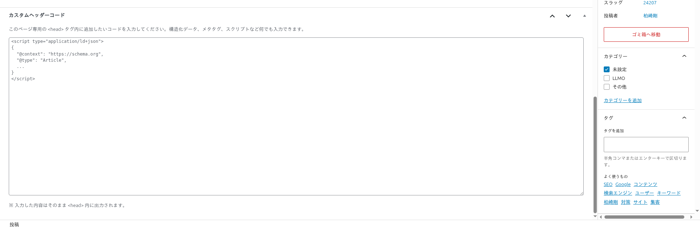

SEOとLLMO
メタディスクリプション・キーワード自動生成、セマンティックHTML、構造化データ（JSON-LD）、ページネーション、タクソノミー、開発者向け機能について解説します。
LLMO / GEO とは
LLMO（Large Language Model Optimization）は、ChatGPT・Claude等の大規模言語モデルがコンテンツを正確に理解・引用できるように最適化する手法です。GEO（Generative Engine Optimization）は、Perplexity・Google AI Overview等のAI搭載検索エンジンからの引用精度を高める手法です。
従来のSEOがGoogle検索のランキングを対象とするのに対し、LLMO/GEOはAIがコンテンツを「正確に理解して引用する」ことを目的とします。Backbone Theme は以下の要素でLLMO/GEO対応を支援します。
- セマンティックHTML: AIがコンテンツ構造を正しく解析できる意味的なマークアップ
- 構造化データ（JSON-LD）: Schema.orgに基づく機械可読なメタデータ
- メタ情報の自動生成: AIがページの要約を取得するためのディスクリプション・キーワード
- 明確な内部リンク構造: タクソノミー横断表示とルートページによるコンテンツ間の関連性表現
メタディスクリプション自動生成
Backbone Theme は、各ページタイプに応じたメタディスクリプション（<meta name="description">）を自動生成します。カスタマイザーの「記事メタ情報設定」→「メタディスクリプション自動生成」で有効/無効を切り替えられます（デフォルト: 有効）。
ページタイプ別の生成ルール
| ページタイプ | 生成方法 | フォールバック |
|---|---|---|
| 投稿・固定ページ | 投稿の抜粋（excerpt）を優先使用 | 本文の先頭25語（約160文字）を自動抽出 |
| フロントページ | サイトのキャッチフレーズ（blogdescription） | 「{サイト名} - 最新の投稿と更新情報」 |
| カテゴリアーカイブ | カテゴリの説明文（WordPress管理画面で設定） | 「{カテゴリ名}の記事一覧」 |
| タグアーカイブ | タグの説明文 | 「{タグ名}のタグが付いた記事一覧」 |
| 著者アーカイブ | 著者のプロフィール説明文 | 「{著者名}が執筆した記事一覧」 |
| 日付アーカイブ | 自動生成のみ | 「{年月}に公開された記事一覧」 |
| 404ページ | 自動生成のみ | 汎用的な「ページが見つかりません」メッセージ |
SEOプラグイン（Yoast SEO、All in One SEO、Rank Math等）を使用する場合は、カスタマイザーの「記事メタ情報設定」から「メタディスクリプション自動生成」を手動で無効化してください。テーマとプラグインの両方がメタディスクリプションを出力するとタグが重複します。
メタキーワード自動生成
テーマはメタキーワード（<meta name="keywords">）も自動生成します。カスタマイザーの「記事メタ情報設定」→「メタキーワード自動生成」で有効/無効を切り替えられます（デフォルト: 有効）。
キーワード抽出の優先順位（個別投稿・固定ページ）
focus_keywordカスタムフィールド（最優先）- 投稿に付けられたタグ・カテゴリ（投稿の場合）/ ページタグ（固定ページの場合）
- 投稿タイトルからの自動抽出（補助的）
ホームページではカテゴリ（上位5件）→ タグ（上位3件）→ サイトタイトル → キャッチフレーズの順に抽出されます。アーカイブページではそのタクソノミー名が使用されます。
メタキーワードはGoogle検索では現在ランキング要因として使用されていませんが、一部の検索エンジンやAIシステムがコンテンツの分類に参照する場合があります。不要な場合はカスタマイザーから無効化できます。
タイトルタグ
テーマはWordPress標準のtitle-tagサポート（add_theme_support('title-tag')）を使用してタイトルタグを生成します。document_title_separatorフィルターによりセパレーター（ページタイトルとサイト名の区切り文字）をWordPressデフォルトの「–」から「|」（パイプ）に変更しています。
出力例: <title>記事タイトル | サイト名</title>
セマンティックHTML
テーマは適切なHTML5セマンティックタグを使用して、検索エンジンやAIがコンテンツの構造を正しく理解できるようにしています。
| HTML要素 | 用途 | LLMO/GEOへの効果 |
|---|---|---|
<header> | サイトヘッダー（ロゴ・ナビゲーション） | AIがサイト情報とナビゲーション構造を識別 |
<nav> | グローバルナビゲーション・パンくずリスト | AIがサイト階層構造を理解 |
<main> | ページのメインコンテンツ領域 | AIが主要コンテンツを正確に抽出（広告・サイドバーと区別） |
<article> | 個別の記事コンテンツ | AIが独立した記事単位を認識し、正確に引用 |
<aside> | サイドバー領域 | AIが補助的コンテンツと主要コンテンツを区別 |
<footer> | サイトフッター | AIがフッター情報（著作権・連絡先等）を識別 |
<time> | 投稿日・更新日（datetime属性付き） | AIがコンテンツの鮮度・時系列を正確に把握 |
これらのセマンティックな構造は、Google検索のクローラーだけでなく、ChatGPT・Gemini・Perplexity等のAI検索エンジンがコンテンツを正確に引用する際にも有効です。特に <main> と <article> の適切な使用は、AIがサイドバーや広告を除いた「記事本文」を正確に抽出するために重要です。
カスタムヘッダーコード（JSON-LD）
投稿・固定ページ・カスタム投稿タイプの編集画面に「カスタムヘッダーコード」メタボックスが表示されます。ここにJSON-LDやmetaタグ等を記述すると、そのページの<head>内に出力されます。

入力例: Article Schema
<script type="application/ld+json">
{
"@context": "https://schema.org",
"@type": "Article",
"headline": "記事タイトル",
"author": {
"@type": "Person",
"name": "著者名"
},
"datePublished": "2026-01-01",
"description": "記事の説明"
}
</script>入力例: FAQPage Schema
<script type="application/ld+json">
{
"@context": "https://schema.org",
"@type": "FAQPage",
"mainEntity": [{
"@type": "Question",
"name": "質問1",
"acceptedAnswer": {
"@type": "Answer",
"text": "回答1"
}
}]
}
</script>入力例: HowTo Schema
<script type="application/ld+json">
{
"@context": "https://schema.org",
"@type": "HowTo",
"name": "手順のタイトル",
"step": [{
"@type": "HowToStep",
"name": "ステップ1",
"text": "ステップ1の説明"
}, {
"@type": "HowToStep",
"name": "ステップ2",
"text": "ステップ2の説明"
}]
}
</script>JSON-LDだけでなく、<meta>タグや<link>タグも入力可能です。OGPタグの追加やcanonical URLの指定にも使えます。例: <link rel="canonical" href="https://example.com/page/">
対応する構造化データの種類
| Schemaタイプ | 用途 | Google検索での効果 |
|---|---|---|
| Article / NewsArticle | ブログ記事・ニュース記事 | 記事のリッチリザルト表示 |
| FAQPage | よくある質問ページ | FAQ リッチリザルト（質問と回答の展開表示） |
| HowTo | 手順・チュートリアル記事 | ステップバイステップのリッチリザルト |
| Product | 商品・サービスページ | 価格・在庫・レビューのリッチリザルト |
| LocalBusiness | 店舗・事業所情報 | ナレッジパネル、Google マップ連携 |
| BreadcrumbList | パンくずリスト | 検索結果にパンくずパスを表示 |
ページネーション
テーマは独自のページネーション（ページ送り）システムを実装しています。
URL構造
| 形式 | URL例 | 備考 |
|---|---|---|
| 新形式（テーマ標準） | /category/news/page-2/ | ハイフン区切りのSEOフレンドリーURL |
| 旧形式（WordPress標準） | /category/news/page/2/ | 自動的に301リダイレクトで新形式に転送 |
対応するアーカイブタイプ
以下のすべてのアーカイブタイプでカスタムページネーションが動作します。
- カテゴリアーカイブ:
/category/{name}/page-N/ - タグアーカイブ:
/tag/{name}/page-N/ - 著者アーカイブ:
/author/{name}/page-N/ - 日付アーカイブ:
/YYYY/MM/DD/page-N/ - カスタム投稿タイプアーカイブ:
/{slug}/page-N/
旧形式 /page/N/ から新形式 /page-N/ への301リダイレクトにより、既存のインデックスやブックマークが自動的に新URLに転送されます。重複コンテンツの問題は発生しません。
タクソノミー横断表示
カテゴリアーカイブやタグアーカイブでは、投稿（post）だけでなく、同じカテゴリ/タグが付けられたすべてのカスタム投稿タイプの記事も一覧に表示されます。
例えば「ニュース」カテゴリに、通常の投稿とカスタム投稿タイプ「プレスリリース」の両方が属している場合、カテゴリアーカイブページにはその両方が表示されます。これによりサイト内のコンテンツ関連性が強化され、内部リンク構造が改善されます。
タクソノミールートページ
テーマは /tag/ と /category/ のルートURL（末尾に特定のタグ名/カテゴリ名がないURL）に対して、すべてのタグ/カテゴリを一覧表示するルートページを提供します。
| URL | 表示内容 |
|---|---|
/tag/ | サイト内のすべてのタグの一覧（タグクラウド） |
/category/ | サイト内のすべてのカテゴリの一覧 |
これらのルートページはSEO上のハブページとして機能し、内部リンク構造を強化します。AIがサイトのコンテンツ分類体系を理解するためにも有効です。
ページのタグ・抜粋機能
固定ページ（page）でもタグと抜粋（excerpt）を使えるようにテーマが拡張しています。
- タグ対応: 固定ページにタグを付けることで、タグアーカイブに固定ページも表示されるようになります。例えば「料金」タグを料金ページと料金に関するブログ記事の両方に付けると、タグアーカイブでまとめて表示されます。
- 抜粋対応: 固定ページの編集画面に抜粋メタボックスが追加され、メタディスクリプションの自動生成やアーカイブ一覧での表示に利用されます。REST APIでも抜粋フィールドが返されます。
開発者向け機能
キャッシュバスティング
「開発者設定」セクションで、CSS/JSファイルにキャッシュバスターを付与できます。フロントエンドと管理画面を個別に制御可能です。
| 設定項目 | 説明 | デフォルト |
|---|---|---|
| フロントエンドキャッシュバスティング | フロントエンド（訪問者向け画面）のCSS/JSファイルにタイムスタンプを付与 | 無効 |
| 管理画面キャッシュバスティング | WordPress管理画面のCSS/JSファイルにタイムスタンプを付与 | 無効 |
テーマやプラグインの更新後にデザインが崩れる場合は、キャッシュバスティングを一時的に有効にすることで、ブラウザに最新のファイルを強制読み込みさせることができます。
カスタムJS注入
「追加JS」セクションで、カスタムJavaScriptをサイトに注入できます。
| 設定項目 | 説明 |
|---|---|
| 全体共通JS | すべてのページに適用されるJavaScript。Google Analytics等のトラッキングコードに最適 |
| 投稿タイプ別JS | 特定の投稿タイプ（投稿・固定ページ・カスタム投稿タイプ）のシングルページにのみ適用 |
| 注入位置 | 各JSの注入位置をヘッダー（<head>内）またはフッター（</body>直前）から選択 |
カスタムCSS注入
「追加CSS」セクションで、カスタムCSSをサイトに注入できます。WordPress標準のカスタムCSS（追加CSS）とは別に管理されます。
| 設定項目 | 説明 |
|---|---|
| 全体共通CSS | すべてのページに適用されるCSS |
| 投稿タイプ別CSS | 特定の投稿タイプのシングルページにのみ適用されるCSS |
| 注入位置 | 各CSSの注入位置をヘッダー（<head>内）またはフッター（</body>直前）から選択 |
カスタムJS/CSSは入力内容がそのまま出力されます（<script>/<style>タグは自動的に除去されます）。構文エラーがあるとサイトの表示に影響する場合があります。unfiltered_html権限を持つユーザー（通常は管理者）のみが入力可能です。変更後は必ずフロントエンドで動作確認を行ってください。
プラグイン連携
Backbone Theme は「テーマは基盤、プラグインで拡張」の設計思想に基づいています。テーマ単体でも基本的なSEO/LLMO対策が可能ですが、高度な機能は専用プラグインで拡張することを推奨します。
| 拡張領域 | テーマが提供する基盤 | プラグインで追加できる機能 |
|---|---|---|
| SEO最適化 | メタディスクリプション/キーワード自動生成、セマンティックHTML、タイトルセパレーター | 高度なメタタグ管理、XMLサイトマップ生成、内部リンク最適化、ソーシャルメディア設定 |
| LLMO対応 | セマンティックHTML、JSON-LD手動入力 | 構造化データの自動生成、AI検索向けコンテンツ最適化、FAQスキーマ自動生成 |
| GEO対応 | タクソノミー横断表示、ルートページ、明確なHTML構造 | AI検索エンジンからの引用精度向上、エンティティ管理、ナレッジグラフ連携 |
| AIO（AI Optimization） | SEO・LLMO・GEOの基盤機能 | SEO・LLMO・GEOを統合的に管理する専用ダッシュボード |